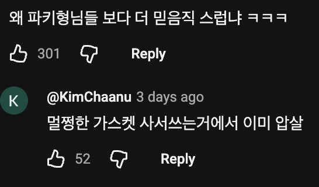
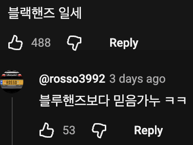

자동차 매케닉은 쿠바가 넘사벽이라던디. 부품이 안들어오고 없는데 고쳐야함. 아직도 클래식카가 현역이라함.
죽..여..줘...
마지막 뭐야 시발 틸팅을 손으로 하는거야? ㄷㄷㄷ


이야 흡배기 벨브시트를 그냥 대충 딱네 ㅋㅋㅋ
로커암도 걍 박아넣고
운전되는게 존나 신기하네
저렇게하면 금방고장남
연명치료는 그런거야
진짜 이런표현은 어케 생각하지 개쩔어
또 살리면 됨
이미고장나서 들어옴
수리비가 얼마일까??
이미 저렇게 해서 200만 뛰었을 텐데 뭘 금방 고장나 검증 끝났구만 200만이 진짜인지는 모르겠지만
동네에 산일하는분 차가 제무씨 625때 차던데 차 수명 존나 긴듯
그 당시 GMC 군용으로 들어왔던거면 구조도 엄청 단순하고 지금처럼 필터니뭐니 그딴거없어서 걍 경운기급 내구성임 ㅋㅋ
하도 많이고쳐서 네비랑 후방카메라 별거 다 들어가있던데 ㅋㅋ
차가 6륜차라서 제무씨 아니면 일반 시중에 나오는차는 산 못탄다더라

어 그러고보니 상용차엔진수리만 하는 개붕이도 있었는데
어여등판해봐라
아니 고치는게 신기한게아니라 완전포장된 신품의 부품이 있다는게 더신기해 ㅆㅂㅋㅋㅋ왜있는거야 ㅋㅋㅋㅋ
이제 길들이기 끝났네
세상이 멸망한다해도 어떻게 또 바로 복구가 될 것만 같다.
오버홀이긴 하…지?
저정도면 오버홀이지 ㅋㅋㅋ
저런 차들은 특히 요즘에는 보증 5년 무한키로 ㅇㅈㄹ 치는 차들도 많긴 함 옛날 차들은 정비요소가 적은 차들도 많고
엔진이랑 캡 생긴거 보니까 아마 쌍용트럭 친구쯤 되는거 같은데 아직 한국에서도 말년이긴 함 ㅋㅋㅋ
가스켓은 새거네
어? 나 저거 카 메카닉 시뮬레이터에서 봤어!!
오토모빌 부두 네크로멘서
블랙핸즈 ㅅㅂㅋㅋ
바이오 토크렌치임?
이런거볼때마다 장갑좀 끼고 했으면 좋겠음 손 더러워지잖어ㅋㅋ
검은색이라 티 안난데
경유차라 엔진이 큰큰한거지? 휘발유 엔진은 20만킬로도 힘들다던디
그건 수리비 대비 잔존가치 고려해서 그쯤 하면 들어가는 돈 보다 그냥 새로 사는게 나은거지, 이제는 휘발유 차량이라고 20만 만에 맛탱이 가는 세상은 아님
맨처음에 포장뜯는저거 피스톤부품인데 새거갈아끼우는것부터가 이미 개압살임 ㅋㅋㅋ
고장났다 이기

검은손
저렇게 건성으로 할꺼면 새부품 쓰는게 아깝다
쟈들 토크렌치 쓰는걸 못봄..ㅋㅋ
새부품 뜯는게 신뢰성 엄청올러가네 ㅋㅋㅋㅋㅋㅋ
환경이 저래서 그렇지 할거다함 ㅋㅋㅋㅋㅋ 가스켓 바꾸는거 지리네
쿠바까지 안가도 북한만가도 저래 아직
너 북한 가봤어..??
노예 엔진... 죽어야 은퇴인데, 부활시킴
고장났다 이기 ㅇㄷ?